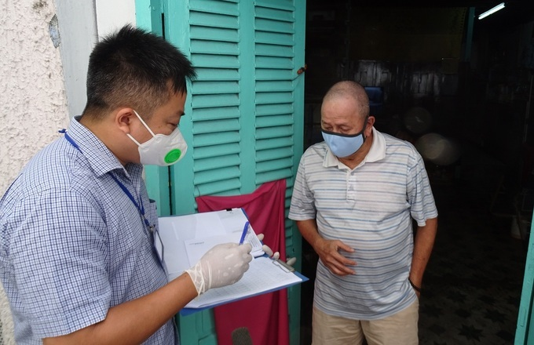
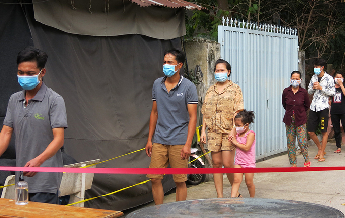
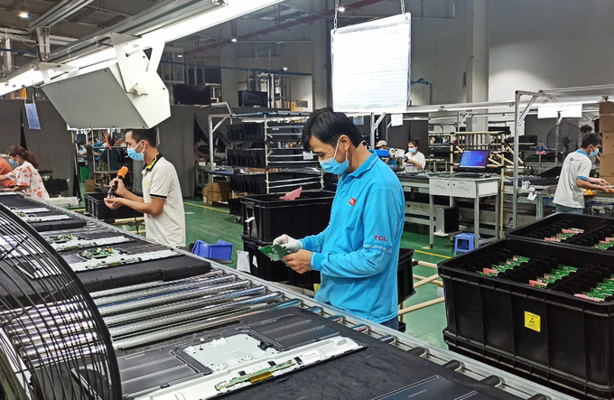

3 gói hỗ trợ người khó khăn ở TP HCM
Ngoài gói 26.000 tỷ đồng hỗ trợ chung cả nước, TP HCM có thêm hai gói tổng kinh phí gần 1.800 tỷ đồng, giúp người dân ảnh hưởng bởi dịch nhưng chưa đáp ứng đủ.
Gói hỗ trợ thứ nhất trị giá 886 tỷ đồng được Sở Lao động, Thương binh và Xã hội TP HCM kiến nghị đầu tháng 6, khi ổ dịch liên quan Hội thánh truyền giáo Phục hưng ở Gò Vấp mới bùng phát. Lúc này thành phố ghi nhận hơn 460 ca nhiễm, và giãn cách xã hội theo Chỉ thị 15, riêng quận Gò Vấp và phường Thạnh Lộc (quận 12) áp dụng Chỉ thị 16. Các hoạt động kinh doanh, giải trí không thiết yếu, một số công ty phải đóng cửa, ảnh hưởng nhiều lao động.
 Ông Vương Chí Tài (phải), 72 tuổi, làm nghề bán vé số, ở phường Đa Kao, quận 1, nhận tiền hỗ trợ đợt một, trưa 12/7. Ảnh: Hà An
Đầu tháng 7, đề xuất nói trên được thành phố thông qua, trọng tâm giúp đỡ 6 nhóm lao động tự do, gồm: Bán hàng rong, buôn bán nhỏ lẻ trên đường phố; thu gom rác, phế liệu; bốc vác, vận chuyển hàng hóa; bán vé số dạo; làm việc tại các hộ kinh doanh trong lĩnh vực ăn uống, lưu trú, du lịch, chăm sóc sức khỏe (bao gồm cả bảo vệ); làm việc thuộc ngành nghề phải tạm ngừng hoạt động theo chỉ đạo của chính quyền thành phố ngày 30/5/2021. Mỗi người nhận 1,5 triệu đồng.
Điểm đáng chú ý ở gói hỗ trợ này là thủ tục được rút gọn. Lao động tự do tạm trú ở TP HCM không phải về quê xác nhận, không cần làm đơn, chỉ cần sống trên địa bàn (tạm trú được cơ quan công an xác nhận) sẽ được nhận hỗ trợ. Chính quyền cơ sở sẽ thống kê, lập danh sách, gửi lên trên duyệt và rót kinh phí. Tuy vậy, số lượng được thông qua thường thấp hơn nhu cầu các quận huyện đề xuất, nên nhiều người phải đợi các gói sau.
Đến nay, gần 366.000 lao động tự do được hỗ trợ với tổng số tiền gần 550 tỷ đồng. Ngoài ra, đợt một cũng chi hơn 115 tỷ đồng cho 56.000 người trong tổng số 59.100 lao động ở doanh nghiệp tạm hoãn hợp đồng lao động, nghỉ việc không lương. Mỗi người nhận 1,8 triệu đồng, trường hợp nuôi con nhỏ dưới 6 tuổi, mang thai được thêm một triệu đồng.
Gói hỗ trợ thứ nhất vẫn đang triển khai để giúp đỡ các nhóm khác như người thất nghiệp không đủ điều kiện hưởng trợ cấp, hộ kinh doanh ngừng hoạt động, thương nhân các chợ truyền thống...
Khi gói thứ nhất chưa hoàn thành, đầu tháng 8 đợt dịch thứ tư bùng phát mạnh. Thời điểm này thành phố ghi nhận hơn 100.000 ca nhiễm, gấp hơn 200 lần số ca ở đầu tháng 6. Đô thị 10 triệu dân phải giãn cách hơn hai tháng, nhiều doanh nghiệp phải dừng hoạt động, số người mất việc gia tăng... Trước bối cảnh này, TP HCM thông qua gói hỗ trợ lần hai tổng số tiền hơn 900 tỷ đồng.
 Người dân khu trọ ở ấp Đông 1, Thới Tam Thôn (Hóc Môn) bị phong toả, xếp hàng nhận thực phẩm từ nhà hảo tâm. Ảnh: An Phương
Cụ thể, ngoài 367.000 lao động tự do, thành phố hỗ trợ thêm khoảng 260.000 hộ nghèo, cận nghèo, hộ lao động nghèo sống trong các khu nhà trọ, khu lưu trú công nhân, khu phong tỏa... Mỗi trường hợp nhận 1,5 triệu đồng. Việc trợ giúp không phân biệt thường trú, tạm trú mà theo tiêu chí "thực sự khó khăn". Trong đó, hộ nghèo từ 3 người trở lên được ưu tiên, hộ 2 người trở xuống các địa phương huy động nguồn xã hội hóa để giúp đỡ.
TP HCM đặt mục tiêu gói thứ hai giải ngân trước thời điểm 15/8, nhưng đến nay chưa hoàn thành. Tính đến chiều 14/8, mới hơn 100.000 lao động tự do được nhận tiền, chiếm gần 30%; khoảng 53.000 hộ nghèo, cận nghèo, hộ lao động khó khăn, trong khu phong toả... được giúp đỡ. Một số địa phương có tỷ lệ giải ngân thấp hoặc chưa báo cáo.
Cùng với hai gói riêng, từ tháng 7, thành phố triển khai gói hỗ trợ 26.000 tỷ đồng theo Nghị quyết 68 của Chính phủ. Theo quy định, người đã nhận cứu trợ thành phố thì thôi gói Trung ương, nếu chênh lệch thành phố sẽ bù. Do đó gói hỗ trợ này chỉ tập trung vào doanh nghiệp và một số nhóm lao động khác như viên chức nghệ thuật, hướng dẫn viên du lịch...
Đến nay toàn bộ 101.400 đơn vị, doanh nghiệp ở TP HCM với hơn 2,3 triệu lao động đã được giảm đóng bảo hiểm tai nạn lao động, bệnh nghề nghiệp với số tiền hơn 1.000 tỷ đồng. 107 doanh nghiệp với hơn 24.000 lao động được tạm dừng đóng quỹ hưu trí và tử tuất với số tiền 186 tỷ đồng.
 Dịch kéo dài khiến nhiều doanh nghiệp khó khăn, cần sự hỗ trợ từ nhà nước. Ảnh: An Phương
Có 50 doanh nghiệp được vay vốn trả lương cho công nhân và phục hồi sản xuất. So với gói hỗ trợ trước đây, điều kiện vay thông thoáng hơn, chính sách mới bỏ điều kiện chứng minh doanh thu hoặc tài chính doanh nghiệp.
Ngoài hỗ trợ ngân sách, huy động nhiều nguồn xã hội hóa, thành phố còn thành lập Trung tâm tiếp nhận và hỗ trợ hàng hóa thiết yếu phục vụ người dân khó khăn bởi dịch ở 3 cấp (thành phố, quận huyện, phường xã). Trung tâm đang triển khai phát hơn 266.000 phần hỗ trợ người dân; chuẩn bị một triệu "túi an sinh"...
Bộ tư lệnh TP HCM thực hiện chiến dịch "gõ từng nhà, tìm người khó khăn" để trao tặng 100.000 phần quà giúp lao động, sinh viên khó khăn, đang "mắc kẹt" ở thành phố.
Tính đến tối qua, thành phố ghi nhận 152.627 ca nhiễm. Với việc kéo dài thời gian cách ly xã hội đến ngày 15/9, tổng cộng TP HCM trải qua hơn ba tháng rưỡi giãn cách theo nhiều cấp độ, dài nhất từ trước đến nay.